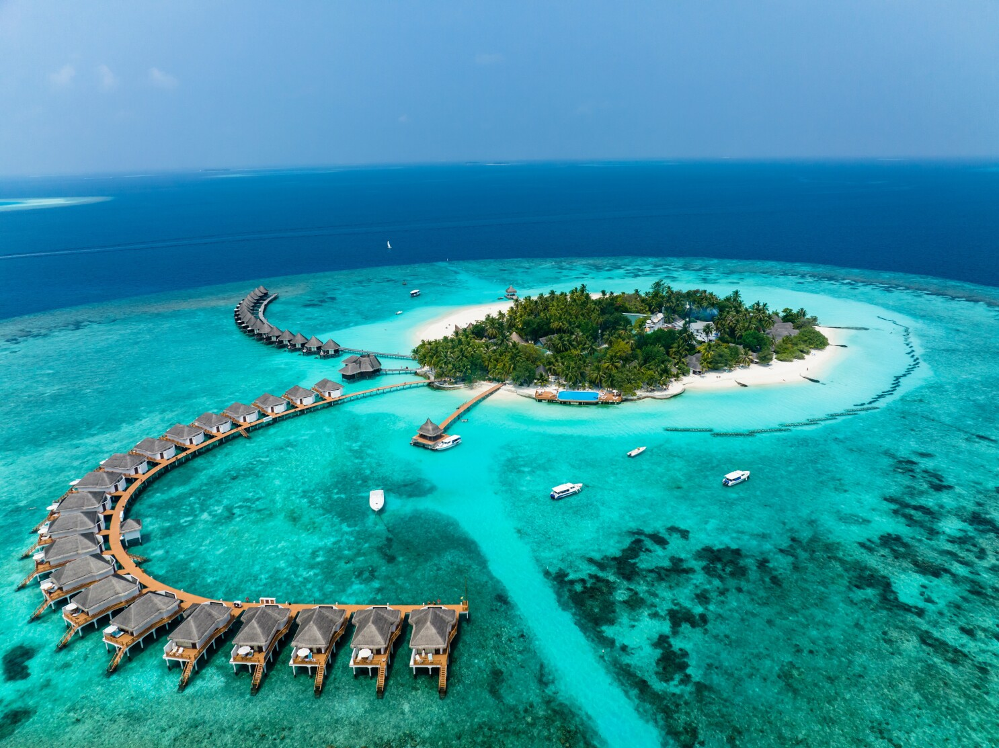
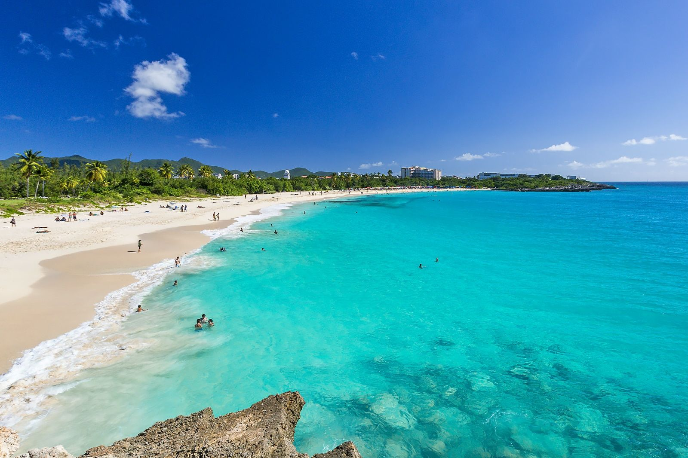

Maldives

Discover ocean wildlife and relax on pristine beaches while sleeping in ocean-top bungalows.
Discover some of the most beautiful and exciting destinations we offer. Whether you want sun, adventure, or culture, we have something for everyone!

Discover ocean wildlife and relax on pristine beaches while sleeping in ocean-top bungalows.
Experience romance, art, and history in the City of Light. Guided tours and cultural experiences available.

Explore the vibrant city life, historic temples, and unique cuisine of Japan’s capital.

Have the time of your life on St Maarten's tropical beaches and experience the unique culture.